Bayesian methods discussed earlier were a preface to the use of different probabilistic techniques in robotics. Bayesian inference derives the final equation that presents the various steps involved in the process of state-estimation by using the action and the model of the system.
The Kalman filters family is used for linear as well as non-linear models with Gaussian noise distribution assumption. This family of filters is most widely used for non-critical tasks where several assumptions and relaxed approximations can be used during noise or system modeling. While Kalman filter works well for linear models, the Extended Kalman filter is capable of working on non-linear models by the potential use of linearization of the models.
The Extended Kalman Filter is the go-to algorithm for state estimation for non-linear models with well-defined transition models. It works on non-linear state transition and observation models while assuming the process and observation noise both to be multivariate Gaussians.
Robot localization is the process of finding the robot's pose(position and orientation) with respect to a given map. Given the stochasticity in robot motion, sensors, and environment interaction, localization is a very sophisticated task. EKF is largely deployed in SLAM algorithms to use the odometry information and the landmarks in the environment for localization. The landmarks are represented as point objects with position (xl, yl) as the cartesian position coordinates.
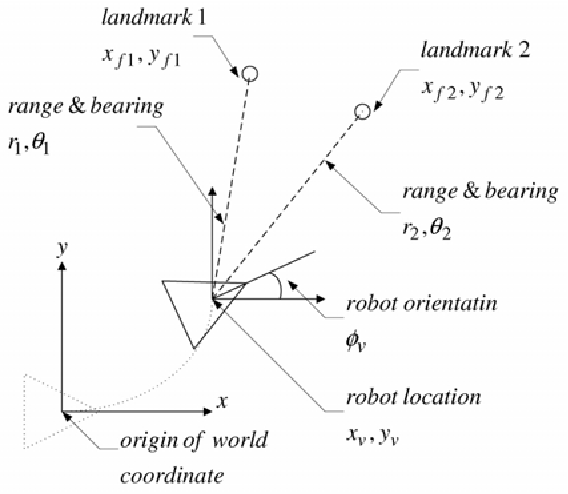
Visual Representation of Robot Localization
REPRESENTATION OF THE DIFFERENT COMPONENTS OF LOCALIZATION
The EKF technique uses feature extraction, landmarks generation, data association, odometry, and landmark representation and sensor data concepts. Here is a glance at them individually after which, the setup should be ready to implement EKF.
Sensor Data: The laser scanner or LiDAR is used here to obtain information about the world. The laser scan gives the range (distance between the target and the sensor) and the bearing (alignment of the corresponding line of sight for the measurement). It is usually represented as [range, bearing] and the bearing value is basically a multiple of the angular resolution of the scanner.
Odometry: Odometry data uses the robot's initial pose, motion information from the wheel encoders(over a finite time span) and the robot kinematic model to predict the robot's new pose. It may also use the control input or the data from an onboard IMU sensor for the same.
Landmarks: Landmarks are those distinct features in the environment that can be used to get a sense of the robot's pose in the environment. These are essentially re-observable features like the edge of the walls or furniture in the environment, patterns on the walls and more. Landmarks should essentially be re-observable from different locations in the environment, distinguishable from each other, ideally stationary and enough in quantity to create a stable map covering the complete environment.
Landmark Extraction: Given that we are using the laser scan data to extract the landmarks in the environment, it is important to define what features we are looking for and expecting. Laser scans give the range and the bearing information over the field of view which is used in primarily two ways to determine landmarks.
If the difference in range values for two consecutive or very closely positioned readings is larger than a threshold, it suggests the presence of a small/point obstruction, which is called a spike landmark. While it is easy to compute, it is prone to errors due to sensor anomalies and not feasible for surroundings with smooth curvature.
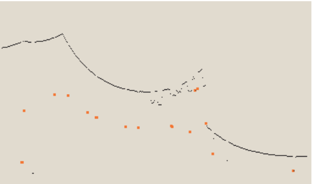
Spikes in red, very prone to errors
Random Sampling Consensus (RANSAC) is a more sophisticated technique used to determine patterns and curvature of the surroundings. For RANSAC, the sensor readings are converted from polar coordinates (range, bearing) to cartesian coordinates (x, y) and then; S points are randomly sampled from these and the least-squares approximation is used to fit a line on these S points. Thereafter, the proximity of the points to this line is obtained and if there is a high consensus(above a set threshold) of points close to this line, it is probably a landmark( maybe a wall), and a better fit is found for all these consensus points.
This best fit line is a landmark and the point on this line closest on the robot, is an equivalent point landmark.
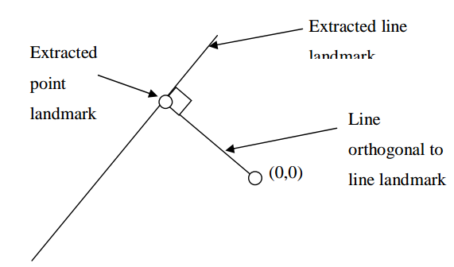
Best fit line landmark to closest point on the line landmark
Data Association: After landmarks have been extracted from the sensor readings, the most crucial step is to identify if the current landmark has already been observed or is a new one. It is crucial to associate the landmark correctly to avoid erratic beliefs in robot's pose. A new landmark is compared against all existing landmarks in the database using the neared-neighbor technique and if their proximity is within the error ellipse, they are essentially the same landmark that has been reobserved.
MAIN COMPONENTS OF EKF LOCALIZATION
EKF localization has three significant steps; state estimate prediction, state estimate update, and addition of landmarks. While there are several intermediate steps, these three steps are the highlight of the complete state estimation cycle.
Prediction: Estimate the current state using the information from the odometry and/or the IMU. It is considering the input to the robot and the model-based expected/observed motion to predict the robot's current state.
New pose: (x,y) -->(dx, dy) (x + dx, y + dy)
Update: Use the information from the landmarks to update the state estimate. This involves several intermediate steps.
When the sensors observe the world, feature extraction techniques are employed to determine if there are landmarks in the surrounding. Using data association techniques, observed landmarks are compared to existing landmarks. If a match is found, the difference in positions of the landmarks (position prediction based on the robot's pose prediction against position observed by the sensing system) acts as the innovation component. The innovation is used to update the robot pose estimate.
For re-observed landmarks, this step also updates the belief in those landmarks and updates their uncertainty matrices defined later.
Landmark Addition: Based on observations in the previous step, if the landmark observed does not match any old landmark and is completely new, it is added to the database of existing landmarks.
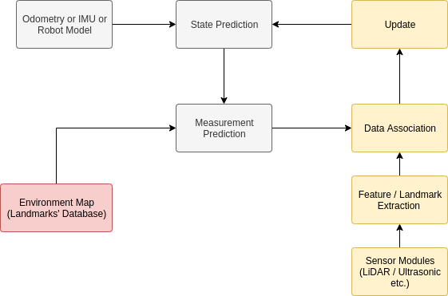
EKF Process
MATRICES USED IN EKF
Discrete-time EKF runs a loop that over every iteration updates and modifies all the values being used in the process. These are multivariate matrices whose components represent the different aspects like the system state, covariance, noises, and more in the process.
Here is a list of matrices used in EKF.
X: System State
The system state is a (3+2n) x 1 vector comprises of the robot pose (position and orientation) and the positions of the n landmarks. While this matrix starts off with just the robot pose, over time, it accumulates the different landmarks as well.
⇒ Robot State Vector R = [xrobot yrobot θrobot]T
⇒ Landmark Position Vector L = [xlandmark ylandmark]T
⇒ X = [xrobot yrobot θrobot xlandmark_1 ylandmark_1 xlandmark_2 ylandmark_2 ...]T or
⇒ X = [ R L1 L2 L3 ...]T
P: Covariance Matrix
Covariance is the measure of the correlation between two variables. It is a representation to estimate how does variations and inaccuracies in one variable affect the other.
⇒ R = [xrobot yrobot θrobot]T has a 3 x 3 covariance matrix.
⇒ L = [xlandmark ylandmark]T has a 2 x 2 covariance matrix.
Futhermore, each landmark has a covariance matrix against other landmarks as well. The final P matrix constitutes all these individual sub-matrices positioned appropriately in the larger matrix.
Initially, without any landmarks observed, P only has the robot state covariance sub-matrix but is gradually populated with other sub-matrices after every iteration.
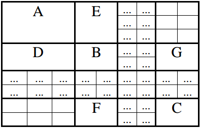
Covariance Matrix P
K: Kalman Gain
It is used to determine the confidence in the prediction step against confidence in the update state. Kalman Gain represents the weightage given to the new information about the robot pose coming from the sensors and to the prediction for robot's current pose made by the odometry and/or robot model information.
If K is high, the external measurement is good, and if K is low, it implies that the state prediction using odometry is good.
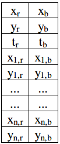
Kalman Gain K
H: Measurement Model Jacobian
A jacobian matrix is derived by partial derivation of a vector against other different variables. the The covariance matrices to be used in the EKF process are derived using the jacobians.
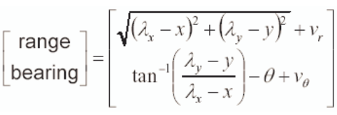
Measurement Model - where (λx, λy) is the position of the landmark and (x, y) is the position of the robot and θ is the robot orientation
Now, the jacobian of this measurement model is H and each column how the range and bearing changes with respect to the robot state parameters x, y and θ using partial differentiation.
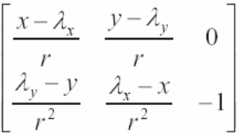
Measurement Model Jacobian H
This is the jacobian matrix H only for state estimation. When it extends to additional components in SLAM as the partial differentiation also needs to be done with respect to the landmark positions (xlandmark, ylandmark)for all individual landmarks..
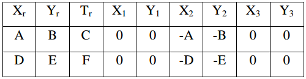
Measurement Model Jacobian H for SLAM with landmark components
Obviously, the jacobian components for landmarks against the other landmarks is 0 as measurement one landmark essentially should not be correlated to another landmark.
A: Prediction Model Jacobian
The prediction model is responsible to use the old positions, control inputs and odometry information to compute the expected new position of the robot.
A is the prediction model matrix used in the EKF process for the process covariance.
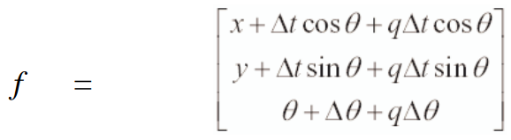
Prediction Model - where (x, y) is the position of the robot, θ is the robot orientation and Δt is the thrust to the robot and Δq is the error
Now, the jacobian of this measurement model is A and each coloumn how the robot's pose (x, y ) and bearing changes with respect to the robot state parameters x, y and θ using partial differentiation.
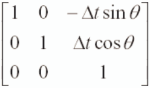
Prediction Model Jacobian A
Similar to the measurement model jacobian H, A here is only when applicable for state estimation. The introduction landmarks introduces a new component of jacobians for the prediction of the landmarks. Thus, the SLAM specific jacobians are Jxr and Jz that define the jacobian of prediction model for the landmark position wrt to the robot state R and jacobian model for the landmark position wrt to the range and bearing.
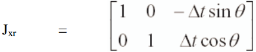
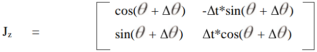
Jxr and Jz
Obviously, the jacobian components for landmarks against the other landmarks is 0 as measurement one landmark essentially should not be correlated to another landmark.
Q: Process Noise Matrix
It is already known that the noise is supposed to be Gaussian in nature. For the localization process, it is natural to assume that the noise is proportional to the control values Δx, Δy and Δt. The noise matrix Q is a 3 x 3 matrix computed using a Gaussian sample C and the component noise vector W.
Q is usually only represented alone or as Q = WCWT but the concept of C is not very well elaborated. It is essentially the component of the sampling that defines the Gaussian nature of the noise.
⇒ W = [Δt cos θ, Δt sin θ Δ θ]
and C is composed of diagonal components cΔx2, cΔy2, cΔt2
R: Measurement Noise Matrix
For the measurements done with the laser scanner, it is expected that the noise again is Gaussian and while the noise in range depeneds on or is proportional to the actual range while the noise is bearing is expected to be constant.
The noise matrix is given as VRVT.
The matrix R is a 2 x 2 matrix with diagonal elements rc and bd where c and d are constants.
As mentioned earlier, the component of bearing noise b is also constant because the bearing is noise independent of the value .
STEPS OF EKF LOCALIZATION EXECUTION
As mentioned earlier, the three most important steps of EKF localization are prediction, udpate and landmark addition. We discuss how the matrices and sub-matrices mentioned above are used to execute these steps.
Initially, the robot starts with a known state and a default initialization of the covariance matrix P (usually just small non-zero values of the diagonal elements). The P matrix starts off as a 3 x 3 matrix because no landmarks exist yet.
PREDICTION STEP
The current state is predicted using the control signal, the previous robot state and the odometry information. It is the same as the prediction model f shown in image above.
A simplified version could be f = [x + Δx y + Δy q + Δq]T where the Δ is computed depending on the kinematics of the robot motion model, be it differential or ackerman or a holonomic model.
After the robot state has been predicted, the other matrices Q and P are also updated.
Updated process noise matrix Q
Now, the covariance matrix P's top left corner has the covariance only for the robot state and is revised using thhe updated Q as:
⇒ Prr = A Prr A + Q
Finally, the covariance or correlations between the robot position and the landmarks or features are also updated as:
⇒ Pri = A Pri
where Pri is the fist 3 rows (corresponding to the x, y and θ from robot position) and all columns.
UPDATE STEP
As already known errors in robot position estimate exist due to odometry errors, model inaccuracies and more, landmarks are used to compensate them.
Landmarks are first observed using feature extraction techniques and data association methods are attempted to compare it to the existing landmarks. Using associated landmarks, the displacement is found and robot position is udpated. However, this is done for each re-observed landmark and not just one. A new landmark is not used in this update procedure.
We can populate the measurement model jacobian matrix H and the measurement noise matrices V and R.
Eventually, we compute the Kalman Gain which is a measure of the amount of confidence to be shown in the measurement model's intended udpate in the robot position and the landmarks' existing position against the already made prediction in the previous step.
⇒ K = P * H T * ( H * P * HT ++ V * R * VT)-1
Here K has the complete set of weights affecting each individual robot or landmark position parameter.
( H * P * HT ++ V * R * VT) is the innovation covariance S.
Hence, the update state vector for the process is given as:
⇒ X = X + K(z-h)
where (z-h) is the delta is robot displacement observed by the sensor using the range and the bearing value.
LANDMARK ADDITION STEP
For an observed landmark LN = (xN, yN) that does not belong to the list of available ones, the position is added to the state vector X. If there are more landmarks, it is more beneficial for the robot to use that while updating the position.
⇒ Xnew = [X LN]T
Now, the addition of a landmark brings about several updates to the covariance matrix P.
The first component is the 2 x 2 PN+1N+1 which is the landmark's self covariance (C in the larger P matrix shown above) given by:
⇒ PN+1N+1 = Jxr P JxrT + Jz R JzT
which essentially uses the jacobian sub-matrices dependent on the robot position and the measurement noise.
Finally the robot to landmark covariance components( a 3 x 2 matrix is the upper right corner of the larger P matrix shown above) are updated as:
⇒ Pr N+1 = Prr JxrT
while the landmark to robot covariance component ( a 2 x 3 matrix is the lower left corner of the larger P matrix shown above) is transpose of the above matrix.
The last step in this process is to add the covariance component PN+1 i for the new landmark against the other existing landmarks (a 2 last rows x all remaining columns matrix on the lowest row) and the tranpose populates the (2 right-most coloumns X all remaining rows) sub matrix.
⇒ PN+1 i = Jxr(Pri)T
CONCLUSIONS FOR RECURSIVE BAYESIAN ESTIMATION
Finally, the robot should be ready to explore the world around and be able to localize itself against the world using predictions, landmarks and reobserved landmarks.
A successor to this will be a project that implements EKF for SLAM localization and navigation with ROS and C++.
IF YOU LIKED THE ARTICLE, DON'T FORGET TO LEAVE A REACTION OR A COMMENT!
Copyright @Akshay Kumar | Last Updated on 01/22/2020